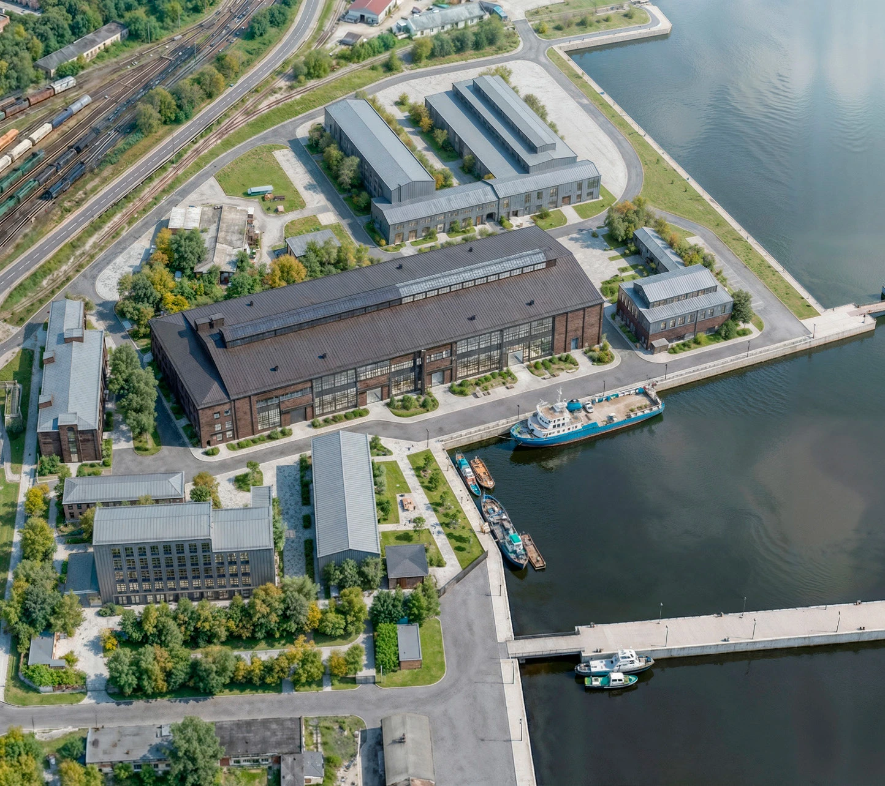

Мурманск.
От модели до образа места
Когда я работал в DŌ buro, мы делали конкурсный проект для территории судоремонтного завода. Я предложил показать, как изменится это место, в двух кадрах: до и после.
Команда выбрала для подачи готовые виды территории и два варианта интерьера цеха. Сегодня покажу и те модели, с которых я начинал.
«Север как Другой»
Внутри старого цеха появляется тёплый остеклённый объём. В модели уже заданы его положение, высота галереи и точка съёмки.
«Глобальная деревня»
Под одной крышей собрались павильоны, зелёный склон и площадь под белой оболочкой. Посмотрим, как пространство меняется с высоты галереи и с уровня человека.
Как удержать
кадр
«Первая колонна слева» помогает точнее, чем «красивое общественное пространство».
Я называю то, что уже видно, а затем меняю одну вещь. Геометрию, границы кадра и соотношение сторон сверяю с исходной моделью.
Запрос для самостоятельной пробы
Сохрани ракурс из модели, ближнюю колонну слева, линию верхней галереи и край стеклянного объёма справа. Добавь тёплый свет за стеклом. Сохрани пропорции исходного изображения.
Город со стороны воды
Мурманск даёт России выход в Арктику через глубоководный незамерзающий порт. На этом берегу рядом живут портовая работа и городская память.
У Морского вокзала стоит «Ленин», первый в мире атомный ледокол. Он работал на Северном морском пути, а теперь на его борту открыт выставочный центр. Для проекта важен вопрос: что человек увидит по пути к воде?
Откуда взгляд с воды
В статье Анни Ирмели Лаппелы о Мурманске герои трилогии Дмитрия Коржова видят город с судна в Кольском заливе. Эту точку зрения интересно примерить к проекту. «Притяжение Севера», 2018, с. 93.
Два исходника,
один вид
В конкурсе я смотрел карты в TopoSection и делал скриншоты. За перспективу отвечала модель Revit, за вид территории сверху - снимок.
Для визуализаций я брал Nano Banana Pro. Подойдёт агрегатор, где доступны именно эта модель и загрузка референсов. В GPT Image тоже можно редактировать кадр по исходнику. Проверьте доступный формат вывода: обрезка по краям меняет композицию ещё до оценки результата.
Что изменилось
у причала?
Перед вами две версии одного ракурса. Сдвиньте границу и сравните левый торец цеха, правый фасад и суда.
Какой из этих элементов вы попросили бы сохранить при следующей генерации? Назовите его так, чтобы другой человек сразу нашёл его в кадре.
Посмотреть подсказку
В варианте Б слева появляется белый купол, справа меняется пристройка, у причала видно другое судно. Каждое изменение можно отдельно обсудить с командой.


От озера к склону
В конкурсной работе я ещё не пользовался QGIS. Для воркшопа взял реальный рельеф другого места Мурманска, у Семёновского озера. Измерим перепад в двух точках.
Подключаем
свой проект
MCP позволяет помощнику вызвать конкретное действие в подключённой программе. Например, прочитать две высоты на открытой карте.
Я работаю в Revit. Если у вас AutoCAD, можно передать туда точки или линии. Для управления через чат нужен совместимый с вашей версией коннектор и набор команд для нужной операции.
1. Установить QGIS
Проверь, установлен ли QGIS на моём компьютере. Если нет, подбери стабильную версию для моей системы на qgis.org, покажи источник и предложи установку. После моего подтверждения установи и проверь запуск.
2. Прочитать отметки
Открой учебный проект из архива. Проверь доступ к QGIS через настроенное подключение, назови доступный инструмент чтения растра. Покажи для точек А и Б значения, единицы и перепад. Если подключения нет, объясни, где прочитать их вручную.
3. Перенести в Revit или AutoCAD
Для Revit возьмите точки XYZ в метрах. В AutoCAD начните с копии чертежа: приложите свой эскиз, задайте масштаб по известному размеру и проведите ось дорожки.
Проверь единицы этого чертежа. Построй по моему эскизу контур дорожки вдоль указанной оси. Ширина для упражнения 3 м. Сначала покажи ход построения. Какие данные нужны, чтобы выбрать ширину для реального участка?
Попробуйте
на своём участке
Возьмите один знакомый ракурс. Задайте одну правку и назовите две детали, которые должны остаться на месте.
Проверьте результат в том же масштабе. Для работы с высотами откройте готовый проект у Семёновского озера.